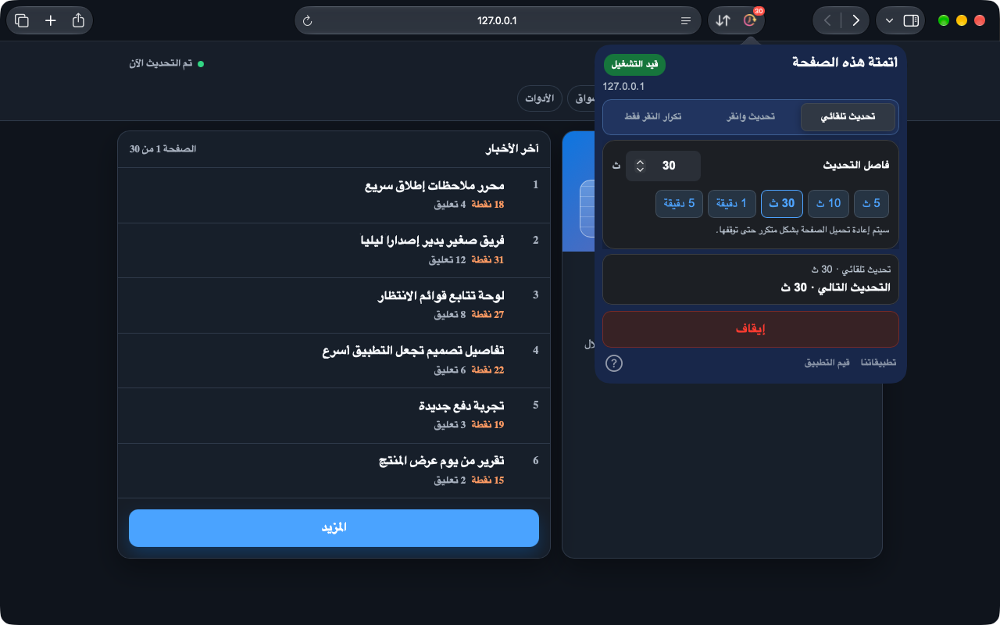
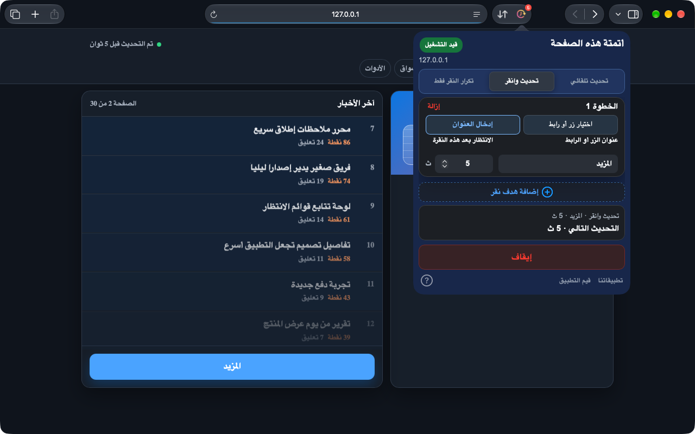
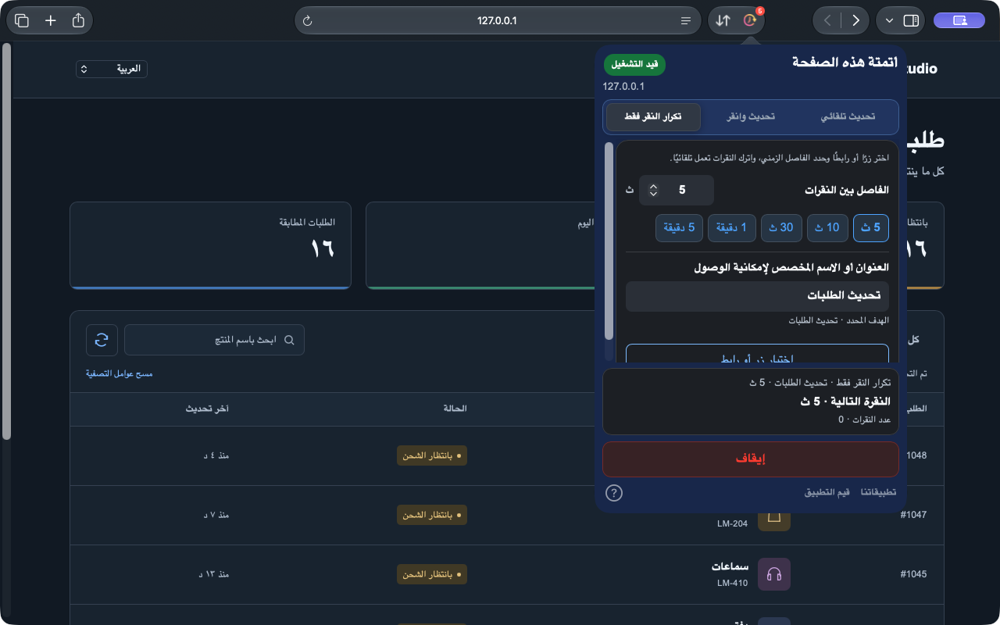

تحديث تلقائي
اختر مدة جاهزة أو فاصلاً دقيقًا لتحديث لوحات المعلومات والمخزون وصفحات الحالة.
Safari على iPhone وiPad وMac. وChrome على الكمبيوتر.
أحيانًا تحتاج الصفحة إلى تحديث كامل، وأحيانًا تكفي نقرة واحدة. يتولى Auto Refresh & Clicker هذه الخطوات المتكررة داخل صفحات Safari لتتفرغ لما يهمك.
داخل متصفحك. دون إنشاء حساب.
معاينة Safari 1.10.0. يجري تجهيز هذه الميزات للإصدار؛ تحقق من النسخة المتاحة في متجرك. تُحدّث إضافة Chrome بشكل منفصل.
شاهد طريقة العمل


Safari على Mac 1.10.0 · لقطات فعلية على صفحة عرض محلية
من لوحة معلومات متغيرة إلى زر تنقره باستمرار: اختر المهمة المناسبة لصفحتك.
اختر مدة جاهزة أو فاصلاً دقيقًا لتحديث لوحات المعلومات والمخزون وصفحات الحالة.
اختر زرًا أو رابطًا من الصفحة، أو اكتب عنوانه. بعد كل تحديث، تُنفّذ النقرات بترتيبك مع انتظار بعد كل خطوة.
كرّر النقرات دون إعادة تحميل الصفحة. اختر حتى زر الرمز، وحدد الفاصل الزمني لتتجدد قائمتك تلقائيًا.
إعداد قصير وحالة تشغيل واضحة.
افتح التطبيق بعد تثبيته، ثم فعّل الإضافة في إعدادات Safari واسمح بالوصول إلى الموقع.
اختر الوضع واضبط الفاصل الزمني أو وقت الانتظار بعد كل خطوة. وللنقر، اختر زرًا أو رابطًا من الصفحة أو اكتب عنوانه.
ابدأ وتحقق من حالة التشغيل والعد التنازلي. يمكنك الإيقاف أو تطبيق التغييرات في أي وقت.
لا حاجة إلى حساب ويب. تُحفظ الإعدادات محليًا وتُدار المهام لكل علامة تبويب على حدة.
على iPhone وiPad، أبقِ Safari في الواجهة. قد يعلّق النظام المهام في الخلفية أو عند قفل الجهاز.
الخصوصيةتعمل المهام على صفحات Safari أو داخل إضافة Chrome للكمبيوتر. لا تتحكم في التطبيقات الأخرى أو واجهات النظام.
افتح التطبيق المثبّت مرة واحدة ثم راجع إعدادات Safari ← الإضافات. استخدم Safari 15.4 أو أحدث. إذا استمرت المشكلة، أرسل للدعم إصدارات macOS وSafari والتطبيق ومصدر التثبيت.
لا يمكن ضمان التشغيل المستمر في الخلفية. قد يعلّق iOS وiPadOS مهام المتصفح. أبقِ Safari في الواجهة أثناء التشغيل.
في إصدار Safari الحالي، عدّل الإعدادات ثم طبّق التغييرات. يعرض الملخص المهمة النشطة. اختر إيقاف لإنهائها.
Safari على iPhone وiPad وMac. وChrome على الكمبيوتر.
راجع كل متجر لمعرفة الأسعار والتوافق الحاليين.